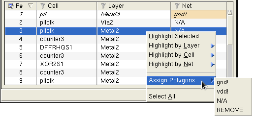

Assigning Net Labels to the Polygons in a Short
When performing interactive short isolation, you may know that a particular polygon belongs to a certain net even though the polygon does not have a net label. You can use Calibre RVE for LVS to assign a net label to selected polygons. This can help you isolate the short, because the short is likely to be one of the polygons left without a net label.
There are three methods for assigning net labels to polygons using the Layout Shorts tab:
Click the toolbar icon and select a net in the layout viewer
Use the dropdown list in the Net column of the detailed short view
Right-click and select Assign Polygons in the detailed short view
Each method is described in the following steps.
Prerequisites
Requirements described in “Interactive Short Isolation”
(Optional) “Viewing Details of Short Polygons”
Procedure
- Use one
of the following methods to assign net labels to a polygon. You
should not assign a net label to a via or contact layer, as this
will cause an error during the short verification process.
Assign net labels by selecting polygons in layout viewer
Right-click the short in the summary view and choose Assign Polygons in Layout, or click the toolbar icon.
The Assign Polygons in Layout dialog box opens, as shown. This example shows a short between nets gnd! and vdd!.
In the dialog box, select the net label you want to assign.
In the layout viewer, click the polygon to assign the net label to. If more than one short polygon is found at the location, you are prompted to select the desired polygon.
The message area in the dialog box indicates the status of the assignment. The Net column in the detailed view is updated if the label assignment is successful, and all polygons between the selected polygon and the endpoint with the same label are also assigned that label.
Assign net labels using the right-click menu
Right-click in the detailed view, select Assign Polygons, and select a net label. If needed, use the highlight selections to view the polygon.
Assign net labels using the Net column in Calibre RVE
Click in the Net column for the polygon. A dropdown list with possible net labels is displayed, as shown in Figure 1.
Choose the correct net label or leave it as N/A for not assigned. To view the polygon in the layout, click the highlight icon
 in the
short highlight toolbar.
in the
short highlight toolbar.
Figure 1. Assigning Net Names for Short Isolation
All polygons between the selected polygon and the endpoint with the same label are also assigned that label. Assigned net labels are in standard font, while net labels from layout text are in italics.
Note:If a polygon on a via layer is selected, N/A and REMOVE are the only available selections. This also applies if multiple polygons are selected and the last polygon is on a via layer.